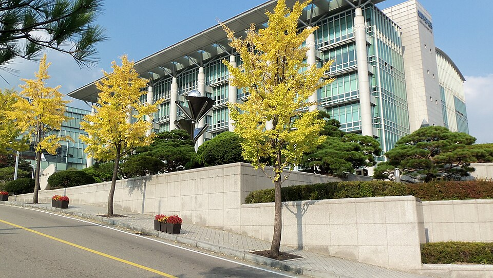

성균관대학교 정시 표에는 다른 대학에 없는 칸이 하나 더 있습니다. 한 계열 안에 반영비율이 두 가지라는 점입니다. 인문계열에는 국어가 40%인 유형과 수학이 40%인 유형이 함께 있습니다. 문과니까 국어라고 정해 두고 달려온 학생에게는 계산이 달라지는 이야기입니다. 이 글은 그 표를 그래서 어느 과목을 먼저로 바꿔 읽습니다. 고3 수학과외에 시간을 얼마나 줄지 정하는 기준이 됩니다.
| 계열·유형 | 국어 | 수학 | 영어 | 탐구 |
|---|---|---|---|---|
| 인문 유형A | 40% | 30% | 10% | 20% |
| 인문 유형B | 30% | 40% | 10% | 20% |
| 자연 유형A | 20% | 40% | 10% | 30% |
탐구는 두 과목을 반영합니다. 두 유형으로 각각 계산해 유리한 쪽 점수가 쓰이는 구조로 안내돼 있습니다. 어느 모집단위가 어느 계열에 들어가는지는 요강에 따로 적혀 있는데, 공개된 정리 기준으로 경영학과·글로벌경제학과 같은 상경 계열은 인문 쪽, 자유전공계열·소프트웨어학과·반도체시스템공학과는 자연 쪽에 들어갑니다.
인문 유형A와 유형B의 차이는 국어와 수학의 자리가 바뀌는 것뿐입니다. 영어 10%와 탐구 20%는 양쪽이 같습니다. 그래서 인문계열 지망생이 성균관대학교를 볼 때 가장 먼저 해야 할 계산은 "내 점수는 국어 40에서 높은가, 수학 40에서 높은가"입니다.
국어가 강한 학생은 유형A에서, 수학이 강한 학생은 유형B에서 유리합니다. 즉 인문계열이라도 수학을 놓은 학생과 수학을 끌고 온 학생의 결과가 갈리는 구조입니다. 문과 학생이 수학을 "최소한만" 하고 국어와 영어에 시간을 몰아 왔다면, 이 표에서는 한쪽 유형을 스스로 버린 셈이 됩니다.
자연 유형A에서 눈에 먼저 들어오는 숫자는 수학 40%이지만, 더 자주 놓치는 숫자는 탐구 30%입니다. 국어 20%보다 높고 영어 10%의 세 배입니다. 탐구 두 과목이니 과목 하나당 15%씩, 국어 한 과목에 가까운 무게를 각각 가집니다.
탐구는 범위가 좁아서 늦게 시작해도 된다는 말을 자주 듣습니다. 그 말이 위험한 이유는 남들도 똑같이 늦게 시작하기 때문입니다. 30%가 걸린 영역에서 여름 이후에 출발하면 올리는 게 아니라 따라가는 것이 됩니다.
영어는 세 유형 모두 10%입니다. 주요 대학 중에서도 낮은 편이라, 영어에 하루 두 시간을 쓰던 학생이 한 시간으로 줄이고 그 한 시간을 국어나 수학으로 옮기는 것은 이 표에서 이득입니다.
다만 10%도 점수로 환산되면 사라지지 않습니다. 등급에 따라 얼마씩 차이가 나는지는 해마다 요강에서 정해지므로, "몇 점 차이"를 미리 계산하기보다 등급이 크게 무너지지 않게 유지하는 것이 현실적인 목표입니다.
학생 수준에 맞는 선생님을 24시간 안에 추천해 드려요. 상담은 무료입니다.